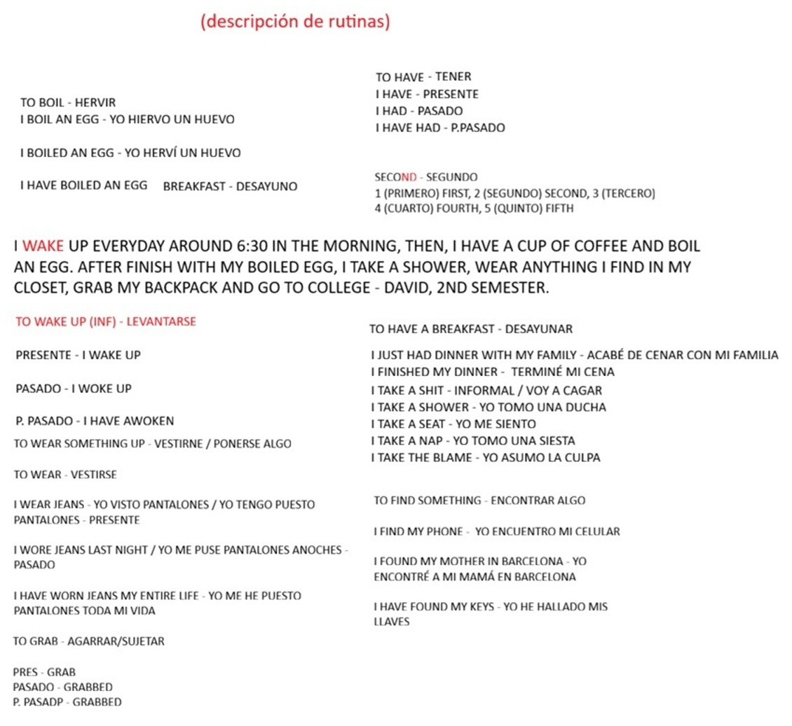

Clase 1: Verbos Clave
| Significado | Presente (V1) | Pasado (V2) | Participio Pasado (V3) |
|---|---|---|---|
| To see (Ver, observar) | SeeI see a movie | SawI SAW you! | SeenI have seen you before |
| To buy (Comprar) | BuyI buy chocolate | BoughtI bought milk | Bought |
| To eat (Comer) | EatI eat salchipapa | AteI ate soup | EatenI have eaten minga before |
Clase 2: Verbos de Acción y Trabajo de Campo
Lista de verbos esenciales vistos en clase, aplicados a la geología.
| Significado | Presente (V1) | Pasado (V2) | Participio Pasado (V3) |
|---|---|---|---|
| To find (Encontrar, hallar) | FindI find quartz samples. (Encuentro muestras de cuarzo) | FoundI found a fossil. (Encontré un fósil) | FoundI have found gold before. (He encontrado oro antes) |
| To drive (Conducir vehículo cerrado) | DriveI drive the 4x4 truck. (Manejo la camioneta 4x4) | DroveAlejandro drove to the mine. | Driven |
| To ride (Montar vehículo abierto) | RideI ride an ATV (cuatrimoto) in the field. | RodeI rode a mule in Tolima. | Ridden |
| To wear (Vestir, usar equipo) | WearI wear safety boots. (Uso botas de seguridad) | WoreI wore a helmet yesterday. | Worn |
| To drill (Taladrar, perforar) *Regular | DrillWe drill the rock. (Perforamos la roca) | DrilledThey drilled 50 meters deep. | Drilled |
Pizarra de la Clase: Rutinas Diarias
Haz clic en la imagen para ampliar los apuntes sobre rutinas y el uso de take, wear y find.

Clase 3: Verbos Irregulares Clave
Verbos fundamentales analizados en la tercera clase, con sus 3 formas.
| Significado | Presente (V1) | Pasado (V2) | Participio (V3) |
|---|---|---|---|
| To go (Ir) | GoI go to the mine. | WentI went to hiking. | GoneHe's gone (Se ha ido/Falleció). |
| To buy (Comprar) | BuyI buy safety equipment. | BoughtI bought milk. | Bought |
| To see (Ver) | SeeI see the rocks. | SawI saw a great movie. | SeenI have seen this fault before. |
| To eat (Comer) | EatI eat breakfast. | AteI ate soap (¡Error! Sopa es soup). | EatenI have eaten. |
Clase 4: La Matriz de Familias de Palabras
Las palabras comparten una misma raíz, pero alteran su terminación para cumplir funciones distintas. A partir de una acción, puedes extraer la cosa, la persona y la característica.
| Verbo (Acción) | Sustantivo (Cosa) | Sustantivo (Cargo / Herramienta) | Adjetivo (Característica) |
|---|---|---|---|
| To extract (Extraer) | Extraction (Extracción) | Extractor (Máquina / Extractor) | Extractive / Extractable (Extractivo / Extraíble) |
| To measure (Medir) | Measurement (Medición) | - (Depende del contexto) | Measurable (Medible) |
| To innovate (Innovar) | Innovation (Innovación) | Innovator (Innovador) | Innovative (Novedoso) |
| To survey (Topografiar) | Survey (El estudio topográfico) | Surveyor (El Topógrafo) | - (Depende del contexto) |
| To drill (Perforar) | Drilling (Perforación) | Driller (Perforador / Taladro) | - (Depende del contexto) |
Clase 5: Verbos Base y sus Capas
En esta clase vimos verbos regulares que funcionan como "Núcleos" a los que se les pueden añadir prefijos y sufijos.
| Núcleo (Verbo Base) | Derivado (Ejemplo Práctico) |
|---|---|
| Calculate (Calcular) | Mis-calculateWe miscalculated the depth. (Calculamos mal la profundidad). |
| Contaminate (Contaminar) | De-contaminateWe must decontaminate the area. (Debemos descontaminar el área). |
| Explore (Explorar) | Explor-erAlejandro is a great explorer. (Alejandro es un gran explorador). |
| Predict (Predecir) | Predict-ableThe stratigraphy is predictable. (La estratigrafía es predecible). |
Clase 6: Familias de Palabras (To Make vs To Do)
En el inglés, "Hacer" se divide en dos. La regla de oro es: Si haces un esfuerzo físico con el cuerpo es DO. Si creas algo nuevo o abstracto que no existía, es MAKE.
| Verbo / Familia | El que lo hace (-er) | Ejemplo Práctico |
|---|---|---|
| To Do (Hacer - Físico/Ejecución) | Doer (Ejecutor) | He is a doer. (Es un hombre de acción / Ejecuta). |
| To Make (Hacer - Crear/Conceptos) | Maker (Creador/Hacedor) | Luis Díaz is a goalmaker. (Hace goles que no existían). Decision maker (El que toma decisiones). |
| To Fight (Pelear) - Sustantivo: A fight | Fighter (Luchador) | He is a great fighter. (Él es un gran luchador). |